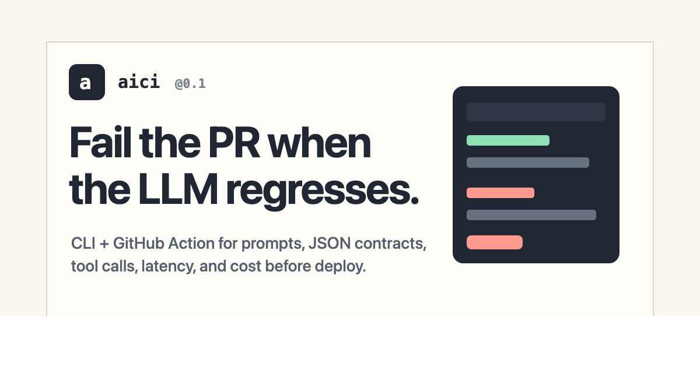
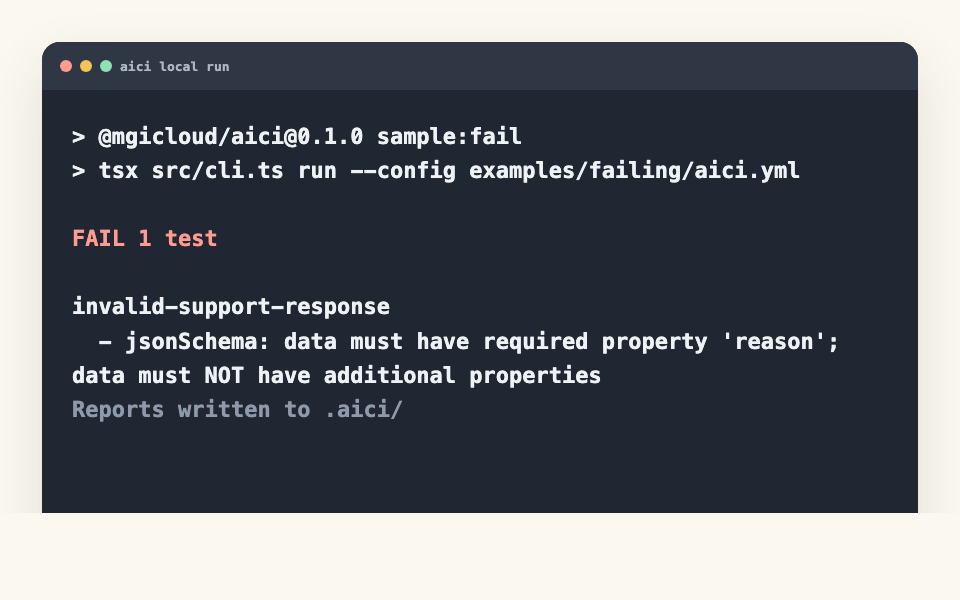
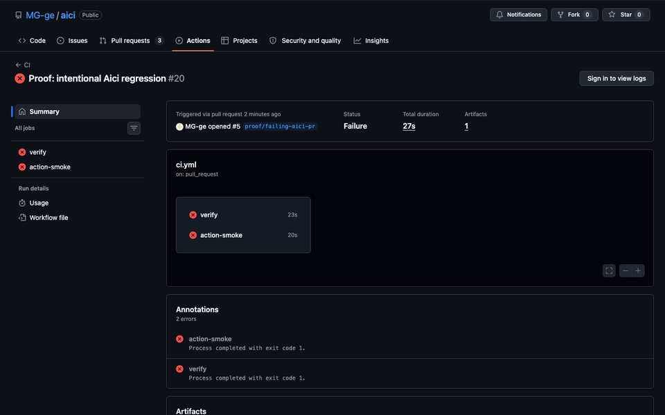
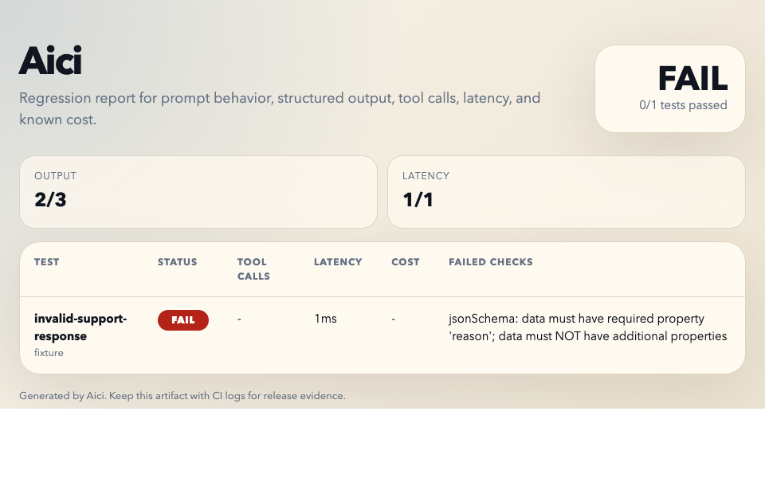

A tiny no-phone-home gate for JSON, tool calls, latency, cost, and provider endpoints.

Fixture-first checks run without provider secrets, so untrusted pull requests can fail safely.

The failure state is the product: small, deterministic, and reviewer-readable.

Markdown, JSON, and HTML outputs are generated locally. Artifact upload is opt-in.
